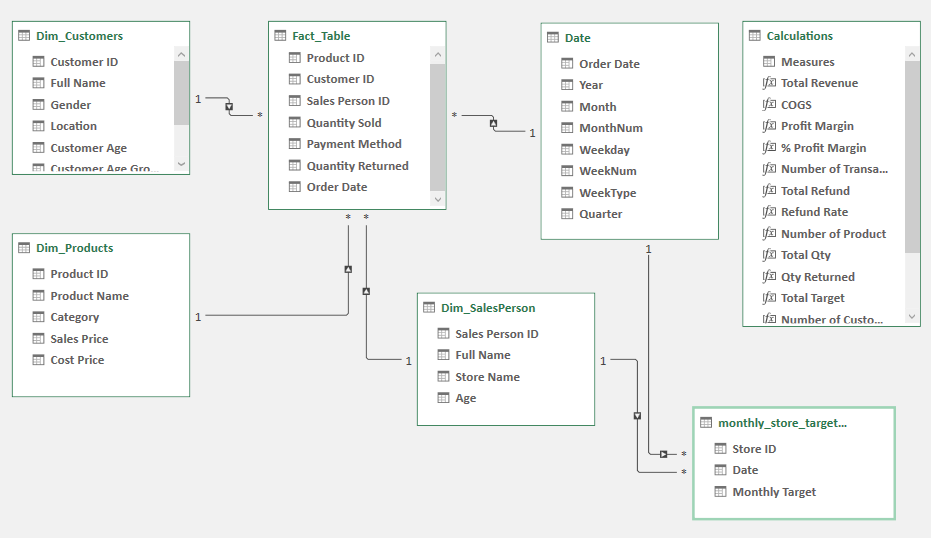

Project Details
Aim
To analyze the profitability, customer behaviour, and store performance, providing actionable insights to enhance business strategy and operations.
Download from GitHub!Problem Statment
The beverage store chain requires a comprehensive analysis of its profitability and revenue across different dimensions, including customer demographics & product performance. The goal was to identify key areas for improvement and support data-driven decision-making.
Tools Used
- Excel: The unsung hero of the project! Excel was used to craft interactive, eye-catching dashboards, leveraging its advanced features like PivotTables, charts, and slicers. Who knew Excel could be so refreshing?
- Power Query: Used for efficient data modification and transformation, ensuring the data feeding into the dashboards was accurate and ready for analysis.
Key Dashboards Developed
- Customer & Product Analysis: Insights into customer profitability, spending patterns, and top-selling products.
- Revenue Analysis: Quarterly and monthly revenue tracking, with a focus on weekday vs. weekend performance.
Setup
To begin the project, I conducted data cleaning to ensure accurate analysis. This involved removing duplicate entries to prevent bias in the dataset and eliminating unnecessary columns. I also transformed the Birthdate column to create age groups for more effective data visualization. Additionally, the date column was utilized to generate groupings such as month, week type, and quarter. Finally, I verified that there was no missing data and that each field was assigned the correct data type.
Analysis
Now that we have clean data, we can perform exploratory data analysis to gain insights and patterns in the data.
Business Questions:
- Which age group is the most frequent purchaser of beverages from the shop?
- What is the predominant gender of customers buying beverages from the shop?
- Which customer segments contribute the most to profitability?
- Which region has the highest concentration of beverage customers?
- Which products generate the highest profit margins?
- Which product categories have the highest sales volume?
- What percentage of products are returned by customers?
- What are the monthly profit trends throughout the year?
- How do weekday sales differ from weekend sales?
- How does actual revenue stack up against the set targets?
By answering these questions, the business can optimize product offerings, tailor marketing strategies, improve customer retention, better align revenue with targets, address product return issues, and focus on high-margin areas to maximize profitability.
Data Exploration
I utilized the available data to create charts that highlight key insights. Additionally, various functions were employed to perform calculations like COGS and profit margins.
Fig 1. This image shows the how five tables have been modeled.
To make it easy to view all this information at once, I have created two dashboard that displays all the charts. I have also added a slicer to the dashboard, which allows users to filter the data based on different criteria. Along with this, I have hyperlinked both the dahboards for better user experience.
Customer & Product Analysis
- Customer Insights: Analyzes profit generated by male and female customers, and breaks down average spending by age groups to identify the most profitable segments.
- Profitability Trends: Tracks profit over time and calculates month-over-month growth, revealing seasonal patterns and sales trends.
- Profit by Weekday: Identifies the most profitable days of the week, which can guide staffing and marketing efforts.
- Product Performance: Highlights top-selling and most profitable products, along with return and refund rates—crucial for inventory management.

Fig 2. This image shows the Customer & Product Analysis Dashboard.
Revenue Analysis
- Quarterly Revenue: Provides a snapshot of revenue per quarter compared to the average, offering a clear view of overall performance.
- Quarterly Revenue: Compares revenue generated on weekdays versus weekends, aiding in operational and staffing decisions.
- Monthly Revenue vs Target: Tracks monthly performance against goals, supporting short-term financial planning and adjustments.

Fig 2. This image shows the Revenue Analysis Dashboard.
Key Findings
Using the dashboard, we were able to determine the following insights:
- Age group: Customers aged 51+ are the most profitable, with higher average spending compared to other age groups.
- Gender insights: Male customers, contribute a little more to overall revenue than their female counterparts.
- Top performing products: Top 5 products generate significantly higher profit margins compared to other products and thus, should be prioritized in inventory and marketing strategies.
- Return rate: The return rate is significantly low, which indicates that product quality is significatly good or good enough to meet customer expectation.
- Weekday vs weekend sales: Weekday sales consistently outperform weekend sales, suggesting that staffing and marketing efforts should be amplified on weekdays.
- Revenues vs Targets: Revenue frequently meets or exceeds targets in most months, but there are notable shortfalls during certain periods, necessitating adjustments to revenue targets and planning.
Recommendations
Based on these findings, the business can implement the following actionable steps to improve sales:
- Seasonal Inventory Planning: Increase inventory levels and prepare promotional campaigns ahead of peak summer months to capitalize on the seasonal demand for beverages.
- Optimize Weekday Operations: Given the higher revenue on weekdays, consider increasing staff.
- Product Line Adjustment: Review and potentially discontinue products with high return rates and low profitability. Consider introducing new products or improving existing ones based on customer feedback.
- Revenue Target Realignment: Adjust revenue targets to reflect seasonal trends and store performance. This will help create more realistic and achievable goals, improving overall financial planning.
- Customer Loyalty Programs: Enhance loyalty programs to increase the rate of repeat customers. Consider offering special deals or rewards for frequent purchases to encourage customer retention.
- Customer Feedback Utilization: Actively use customer feedback to make improvements in products and services, ensuring that customer satisfaction remains high, which will likely lead to increased sales.
Learnings
- Excel-ling Beyond Expectations: Maximized Excel's Capabilities. Excel's advanced features proved invaluable in creating dashboards that deliver strategic insights, challenging the notion that Excel is just for basic analysis.
- Data Transformation and Cleaning with Power Query: Power Query played a crucial role in preparing and cleaning data, demonstrating how Excel can handle complex data operations and integration, further enhancing the dashboarding process.
In conclusion, these findings provide valuable insights into the demographics and preferences of beverage purchasers. By implementing these actionable steps, the business can improve sales and better cater to the needs and interests of its target market.